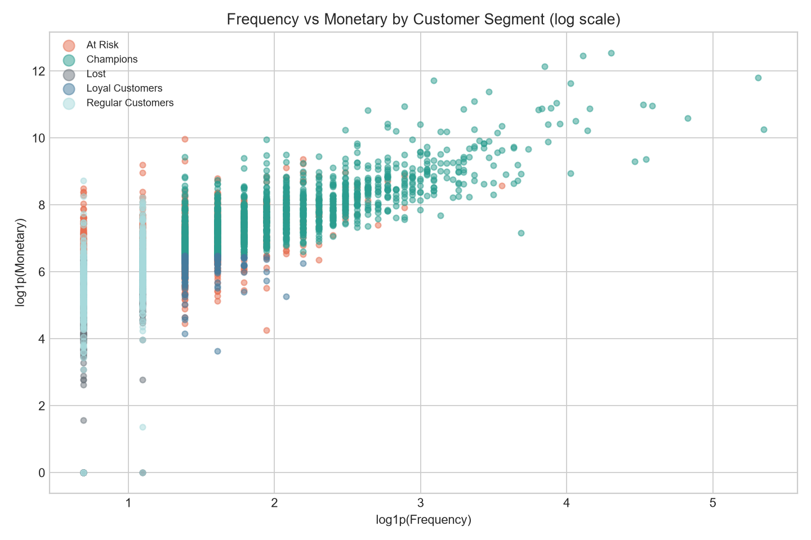

ĐỒ ÁN PSD301M
Tổng quan bán lẻ trực tuyến
Doanh thu, khách hàng và giao dịch hoàn hủy trong bộ dữ liệu UCI Online Retail.
01/12/2010 – 09/12/2011 · GBPKhông tìm thấy dữ liệu. Hãy mở index.html cùng thư mục với data.js.
02 / DOANH THU
Doanh thu theo tháng
12/2011* chỉ có dữ liệu đến ngày 09/12. Đoạn nét đứt đánh dấu tháng chưa đủ dữ liệu.
Xem số liệu từng tháng
03 / XẾP HẠNG
Sản phẩm và thị trường
Top 10 mã hàng
Top 10 quốc gia
04 / KHÁCH HÀNG
Phân khúc RFM
Phân bố khách hàng định danh
Frequency và Monetary


05 / HOÀN HỦY
Hai đơn hàng bất thường
Hai dòng bán có số lượng rất lớn đều có dòng hủy tương ứng. Lượt bán ban đầu vẫn góp vào gross.
Top 3 theo số hóa đơn hủy
Top 3 theo giá trị hoàn trả
06 / PHƯƠNG PHÁP
Giới hạn dữ liệu
- Thiếu mã khách hàng. Những dòng này vẫn được tính vào doanh thu, nhưng được loại khỏi RFM và Cohort.
- Doanh thu gross. Các tổng doanh thu trên dashboard ghi nhận giao dịch bán trước khi trừ giá trị hoàn hủy.
- Phạm vi thời gian. Dữ liệu kéo dài khoảng một năm và chỉ tới 09/12/2011. Kết luận về mùa vụ cần thêm dữ liệu nhiều năm.
- Thiên về thị trường UK. Cơ cấu doanh thu phản ánh chủ yếu hoạt động bán hàng tại Vương quốc Anh.
- Mã phí và dịch vụ. Các bảng gross gốc có chứa mã phí như DOT, POST và Manual. Cần phân biệt chúng khi đánh giá hiệu quả hàng hóa.